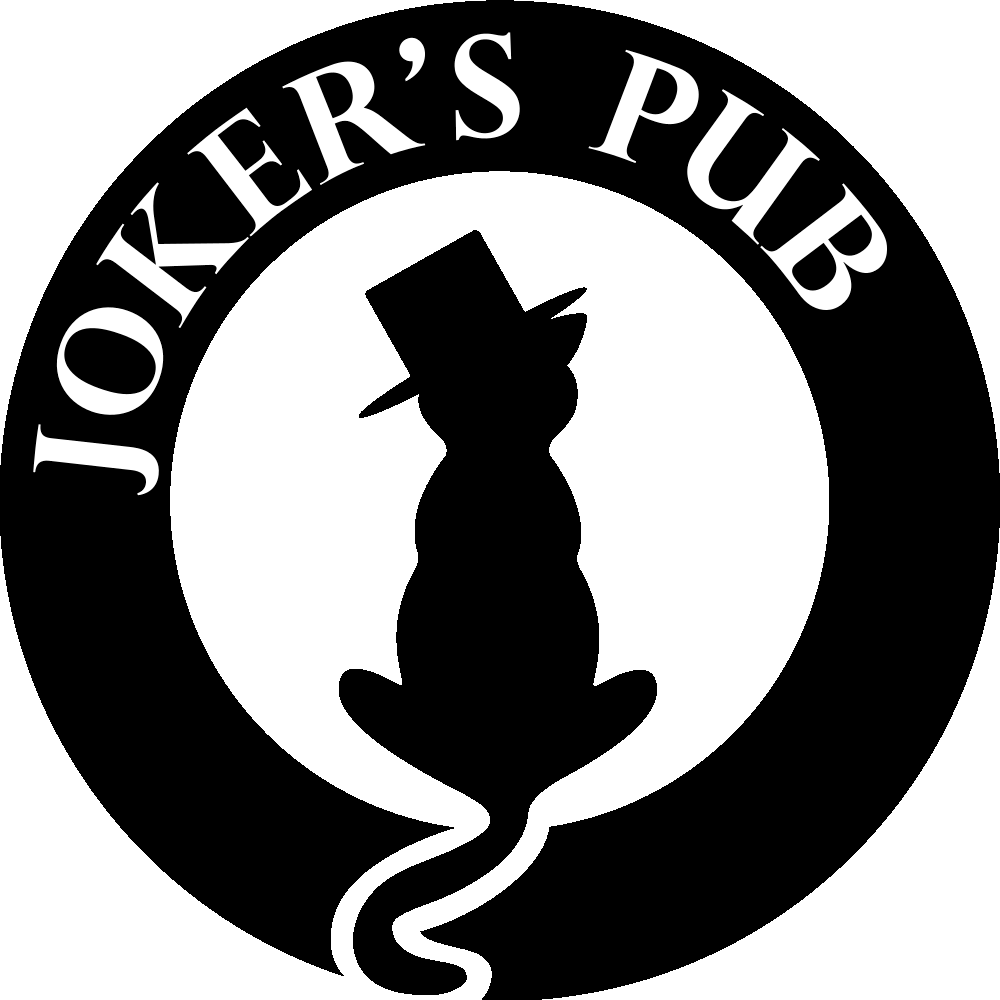
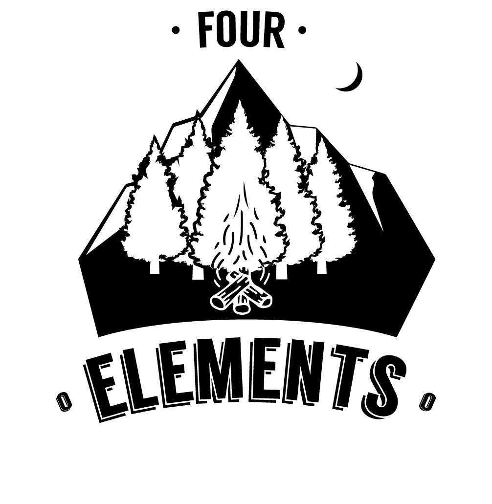
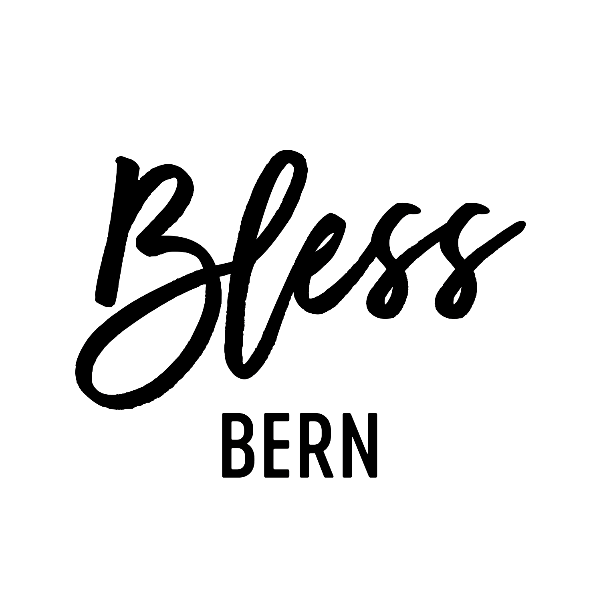
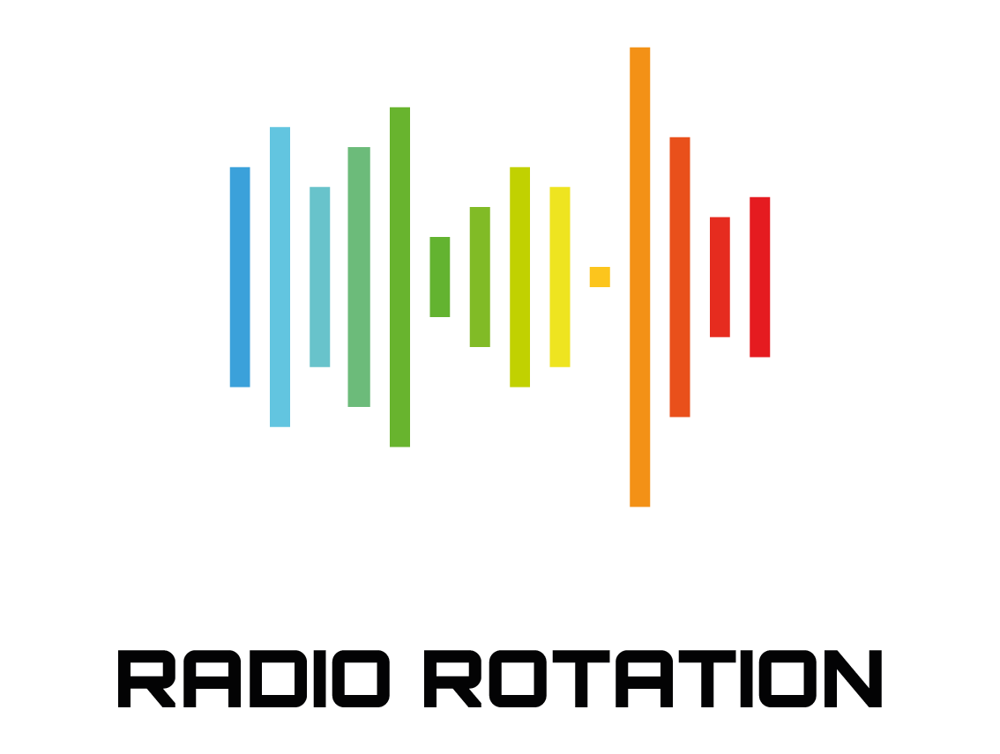

Projekte die ich Umgesetzt habe
Erfahre mehr über meine Projekte, die ich in den letzten Jahren umgesetzt habe. Von Webauftritten über Social Media bis hin zu kreativen Projekten.

Joker's Pub
Google Sites
HTML / CSS / JS
Ein besonderes Highlight für die WM 2026 ist der von mir entwickelte Live-Spielplan. Die Fussballfans verpassen hier kein einziges Tor, da sich die Ergebnisse und Paarungen vollautomatisch im Hintergrund aktualisieren. So bleibt die Community immer ohne manuellen Aufwand auf dem neuesten Stand.

FOUR ELEMENTS
Google Sites
Google Workspace
Das Four Elements Lager ist ein unvergessliches Frühlingserlebnis für Jugendliche und junge Erwachsene aus dem Oberaargau und Emmental. Hier trifft man nicht nur auf Gleichgesinnte, sondern auch auf ein engagiertes Team, das für jede Menge Sport und Spass sorgt. Um die Erfahrung noch zugänglicher zu machen, habe ich die Webseite komplett neu gestaltet. Sie dient als zentrale Anlaufstelle für alle Informationen rund um das Lager und bietet eine benutzerfreundliche Plattform, um sich anzumelden und mehr über die Aktivitäten zu erfahren.

BLESS BERN
WordPress
HTML / CSS / JS
Für BlessBern, die kirchenübergreifende Bewegung junger Erwachsener in Bern, habe ich den Webseiten-Auftritt komplett überarbeitet. Ziel war ein frischeres, moderneres Design, das die lebendige Gemeinschaft und die relevante Botschaft von BlessBern visuell unterstreicht. Der Relaunch fokussiert auf eine intuitive User Experience und eine Optik, die die Zielgruppe anspricht: Menschen, die echte Gemeinschaft suchen.
Joker's Pub
Google Sites
HTML / CSS / JS
Für das „Joker's Pub“, einen zentralen Treffpunkt in Herzogenbuchsee, habe ich ein Webprojekt realisiert. Es gab einen Neuaufbau der Webseite, um einen zeitgemässen und ansprechenden Online-Auftritt zu schaffen. Dabei habe ich eine digitale Getränkekarte integriert, die den Gästen einen schnellen Überblick über das Angebot ermöglicht. Zusätzlich habe ich ein benutzerfreundliches Kontaktformular erstellt. Neben der Webseitenerstellung übernehme ich auch die Gestaltung von Social-Media-Beiträgen, um die Online-Präsenz zu stärken.
WAGNER HOMEBREW
Google Sites
Für Wagner Home Brew, eine kleine Ein-Mann-Brauerei in Inkwil, habe ich einen neuen Webauftritt realisiert. Ziel war es, einen modernen und ansprechenden Online-Auftritt zu schaffen, der die Leidenschaft fürs Brauen widerspiegelt. Ich habe eine intuitive Produktpalette integriert, die den Besuchern einen schnellen Überblick über das vielfältige Biersortiment verschafft. Der neue Webauftritt präsentiert die Brauerei professionell und lädt dazu ein, die handwerklich gebrauten Biere zu entdecken.
FOUR ELEMENTS
Das Four Elements Lager ist ein unvergessliches Frühlingserlebnis für Jugendliche und junge Erwachsene aus dem Oberaargau und Emmental. Hier trifft man nicht nur auf Gleichgesinnte, sondern auch auf ein engagiertes Team, das für jede Menge Sport und Spass sorgt. Um die Erfahrung noch zugänglicher zu machen, habe ich die Webseite komplett neu gestaltet. Sie dient als zentrale Anlaufstelle für alle Informationen rund um das Lager und bietet eine benutzerfreundliche Plattform, um sich anzumelden und mehr über die Aktivitäten zu erfahren.
ÖV-Planer
Web-Entwicklung
Aus reiner Langeweile habe ich ein kleines Tool für den öffentlichen Verkehr entwickelt. Es ist eine einfache Webanwendung, die dabei hilft, Verbindungen schneller zu finden oder übersichtlicher darzustellen. Das Projekt entstand komplett eigenständig als spielerische Herangehensweise an die Arbeit mit Fahrplandaten.

RADIO ROTATION
Wix Studio
API
Livestream
Ich habe gemeinsam mit einem ehemaligen Freund den Online-Radiosender „RADIO ROTATION“ betrieben. Unser Ziel war es, ein spontan-sympathisches, abwechslungsreiches und unterhaltsames Programm zu gestalten, das interaktiv mit den Hörern verbunden ist. Wir haben uns auf Pop- und Rockmusik konzentriert und eine Zielgruppe von 14 bis 59 Jahren angesprochen. Um das Projekt zu realisieren, habe ich eine Webseite entwickelt, auf der der Sender live gestreamt werden konnte. Zudem habe ich verschiedene APIs eingebunden, um Funktionen wie die Anzeige des aktuellen Titels und die Interaktion mit den Hörern zu ermöglichen.
Das Projekt wurde im Jahr 2021 einstellt.